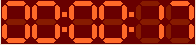

To run the scan, you need to change to the Run
tab. To do so, click on the Run tab at the bottom of
the Scan Design & Run. The Design tab disappears and is replaced with
the Run tab, as seen in Figure 2.18, “Run tab”. You can
check the Tcl script that is going to be sent to SICS to run. Before you
want to run the script, it is recommended to validate the script first. To
validate the script, send the script to a validation server by clicking on
the Open Validator button. To run the script, simply
click on the  button.
button.
The Tcl script generated by the Design tab will show up in the text area of the Run tab. Before you run the script, please visually check the script and validate it. Validation is done by sending the script to SICS running in simulation mode. To do the validation, click on the Open Validator button. A connection window will pop up to login in to SICS, as seen in Figure 2.19, “Validation Dialog”. Simply input your SICS login name and password and click on Validate. The script should only take a few seconds to run. If there is a problem in the script code, the validation window will let you know. Otherwise it will tell you that the script validation has passed.

To run the Tcl Script, click on the button. Gumtree will send the Tcl script to SICS
to run.
When SICS is running the scan script, the button changes to an  button. You can use this button to stop the
script.
button. You can use this button to stop the
script.
There are three buttons available in the Gumtree application
window.
The most convenient way of stopping running of the script is to use the SICS Interrupt Button in the Sidebar. In every Gumtree window, there is a Sidebar located at the right side of the window. Single click on the
button will stop SICS. To learn more about
the Sidebar, please read Section 2.9.2, “SICS Interrupt”.Once the script is running, the Run button in the Run tab will change to an
button. You can use this button to stop the
script.There is an
button in the status bar at the bottom of the
Scan Experiment Window, as shown in Figure 2.20, “Interrupt Button at the Foot Bar”. You can use this button to stop the
script.

Once you click on the Run button, the status bar on top of the Run
block will change colour and show . Meanwhile the timer at the top right will start,
for example, . When one line of the script gets processed, the
colour of that line is changed to yellow. When the script processing is
complete, the status label becomes  and the timer stops.
and the timer stops.